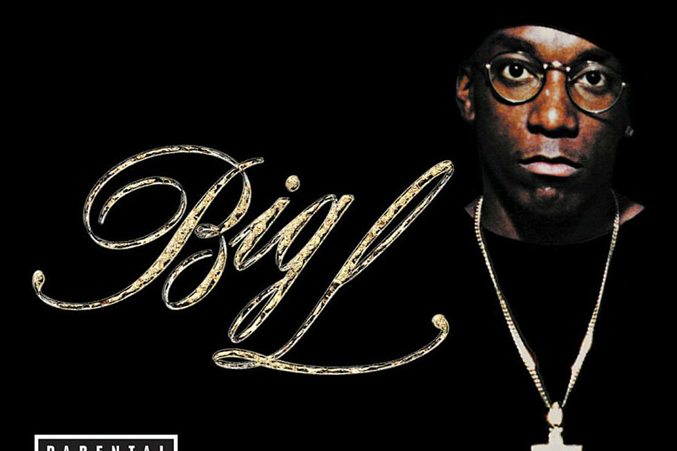

Big L - Rest in Peace

Lamont Coleman (May 30, 1974 – February 15, 1999), known professionally as Big L, was an American rapper and songwriter.
Emerging from East Harlem, New York in the early to mid-1990s, Coleman became well known amongst underground hip-hop fans for his freestyling ability, and was eventually signed to Columbia Records, where, in 1995, he released his debut album, Lifestylez ov da Poor & Dangerous, an album that is now considered by many fans to be a classic.
On February 15, 1999, Coleman was shot nine times by an unknown assailant in East Harlem, New York, his hometown. He died from his injuries